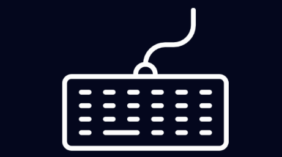
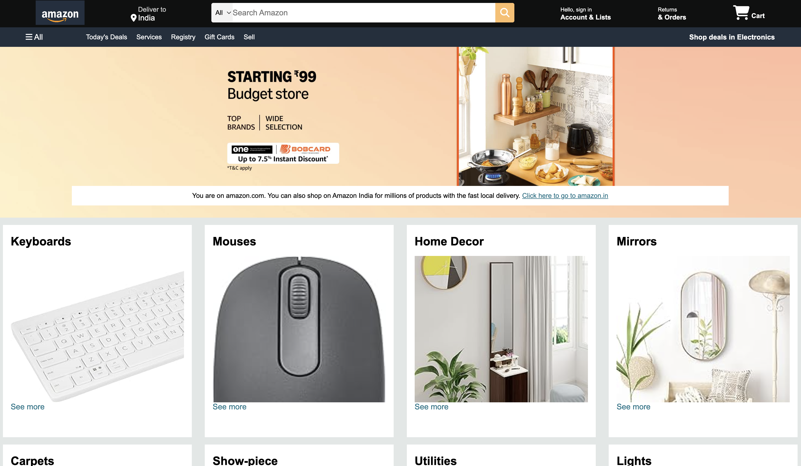
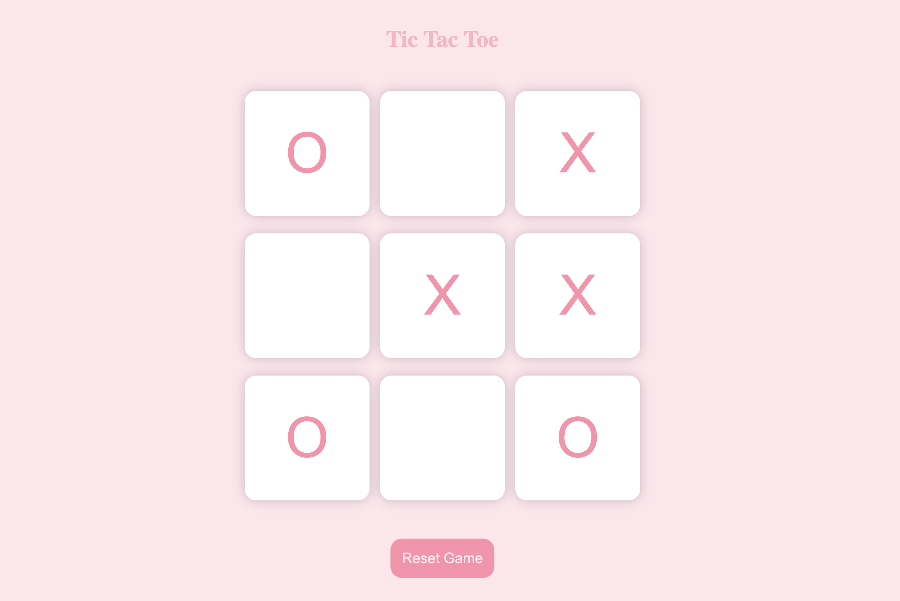

I enjoy building responsive and user-friendly
web applications.
I specialize in front-end development and love turning ideas into
reality using HTML, CSS, and JavaScript.

Hello, I am
Introduction
About me.

Frontend Developer with a growing interest in the MERN stack
and a strong focus on building responsive web applications.
I'm currently a Computer Science student,
eager to enter the professional world to explore new technologies,
sharpen my existing skills, and develop new ones along the way.
Always eager to learn and improve in every step of the journey.
I embrace every opportunity to expand my knowledge and grow as a developer.
Education
3 Years
B.Tech in Computer Science
DSA
3 Years
Have developed my algorithmic skills by solving several DSA based problems
Machine Learning
3 Years
Have explored the field of Machine Learning
Frontend Developer
1 Year
I have polished my development skills by working on several projects.
My work
Projects.

Typing World
An interactive web application designed to help users improve their typing speed and accuracy.
- Responsive UI
- Typing tests
- Real-time Speed and Accuracy
- Instant feedback

Amazon-Clone
The Amazon Clone is a front-end-only web project that replicates the look and feel of the Amazon homepage using just HTML and CSS. The goal of the project is to understand layout structuring, responsive design, and styling techniques while recreating a complex, real-world e-commerce interface.

Tic-Tac-Toe
The Tic-Tac-Toe project is a web-based implementation of the classic 2-player game, built entirely with HTML, CSS, and JavaScript. It provides a simple and interactive interface where two players can take turns, and the game automatically detects win conditions or a draw.